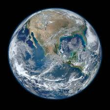

Mercury
Mercury is the smallest planet and closest to the Sun. It has a rocky surface covered with craters and no atmosphere to retain heat.

Venus
Venus is similar in size to Earth but has a thick, toxic atmosphere primarily composed of carbon dioxide.

Earth
Earth is the only planet known to support life, thanks to its liquid water, breathable atmosphere, and ideal distance from the Sun.
Mars
Mars is known as the "Red Planet" due to its iron-rich surface. It has the largest volcano in the solar system, Olympus Mons.